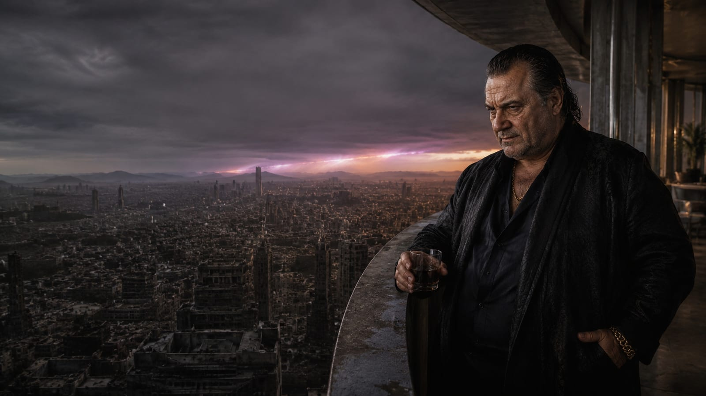

МАСТЕР СПЕКТРА · БОГ ТЬМЫ И СВЕТА
ДАРИАН
СОРЕЛЬ
66-летний «решающий голос» Ракшасов и номинальный правитель Куньмина, подчиняющий себе солнечный свет — не расчётливый тиран, а заурядный, порочный человек, получивший абсолютную безнаказанность.